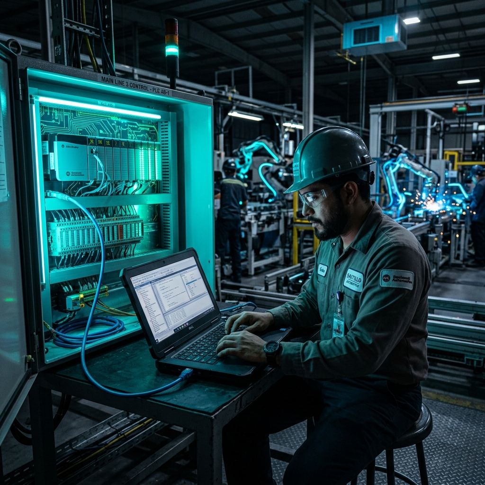

¿Sabías que un Programador de PLC en Saltillo puede ganar más de $100,000 pesos al mes?
Publicado por el Equipo de Ingeniería de Robologix Automation | Coahuila, México
Resumen de Mercado:
En el clúster industrial de Saltillo, Ramos Arizpe y Derramadero, la programación de Controladores Lógicos Programables (PLC) es una de las especialidades técnicas más codiciadas. Un especialista Senior o Ingeniero de Campo en automatización bilingüe (con dominio de Allen-Bradley Studio 5000 y Siemens TIA Portal) alcanza ingresos superiores a los $100,000 MXN mensuales o tarifas por hora de consultoría internacional, debido al alto impacto económico de prevenir paros de línea en plantas automotrices Tier 1 y OEMs.

Ingeniero de automatización diagnosticando un sistema PLC Allen-Bradley en planta industrial.
1. El Fenómeno del Nearshoring en la Región Sureste de Coahuila
La llegada masiva de inversiones en el corredor industrial Saltillo-Ramos Arizpe-Monterrey ha acelerado la instalación de celdas robotizadas y líneas de ensamble automatizadas. Las plantas de empresas como General Motors, Stellantis, Magna, Martinrea y John Deere requieren expertos capaces de programar, poner en marcha y optimizar la lógica de control sin margen de error.
Esta competencia por talento calificado ha elevado significativamente las compensaciones para los profesionales que dominan las tecnologías de control en tiempo real.
2. Tabulador de Salarios Promedio para Programadores de PLC en Coahuila
- Nivel Junior / Soporte en Turno ($25,000 - $40,000 MXN/mes): Mantenimiento básico de tableros, lectura de diagramas de escalera, forzado de I/O y diagnóstico de sensores convencionales.
- Nivel Senior / Ingeniero de Control ($50,000 - $80,000 MXN/mes): Desarrollo de lógica modular desde cero (Studio 5000, TIA Portal), integración de redes industriales (EtherNet/IP, PROFINET), servomotores y celdas de seguridad (Safety Controllers).
- Lead Integrador / Field Service Engineer Bilingüe ($100,000+ MXN/mes): Puesta en marcha de líneas completas, integración robótica multimarca (FANUC, ABB), ciberseguridad OT, arquitectura SCADA/MES y soporte a proyectos de exportación.
3. ¿Por qué la Industria Paga Altos Salarios en PLC?
En una ensambladora automotriz, un solo minuto de paro no programado puede costar entre $10,000 USD y $50,000 USD en pérdidas de producción, penalizaciones por entrega tardía y paros de personal.
Un programador de PLC experimentado no solo escribe código: es quien resuelve fallas complejas en minutos, evita colisiones de robots y optimiza la secuencia de producción para aumentar el rendimiento anual en millones de pesos. Por ello, el valor económico que aportan supera con creces su costo salarial.
4. Habilidades Técnicas Más Requeridas en la Región
Plataformas de Control
Dominio de Studio 5000 Logix Designer (Allen-Bradley) y TIA Portal (Siemens S7-1500).
Seguridad y Redes OT
Configuración de redes EtherNet/IP, PROFINET, CIP Safety, PROFIsafe y switch gestionados.
Robótica y Visión
Interconexión de señales con robots FANUC / ABB y cámaras de inspección Cognex / Keyence.
¿Por qué trabajar con el Equipo Senior de Robologix?
Más de 15 años de experiencia acumulada en líneas de ensamble automotriz y metalmecánica.
Integraciones llave en mano, programación por cambios de modelo y pólizas de soporte presencial.
Presencia directa en el corredor industrial Saltillo - Ramos Arizpe - Derramadero.
Artículos Técnicos Relacionados:
¿Tu Planta Necesita Programación o Soporte Especializado de PLC?
En Robologix Automation contamos con ingenieros senior certificados para proyectos de integración, optimización de tiempo de ciclo y soporte técnico 24/7 en Coahuila.
Hablar con un Ingeniero Senior de Robologix